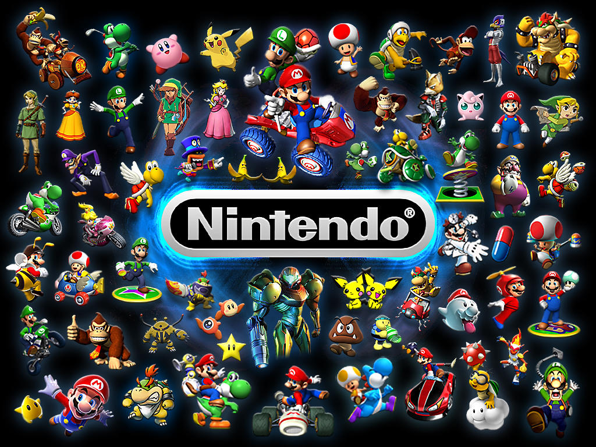

2009 · Foundation
Nintendo of America
Customer analyst, operations and technology
I entered games as a customer analyst. New tools for support ops: speech analytics on call-center performance and IVR routing.
- Led Oracle integration work with Slalom
- Measure, route, improve, repeat. Still my default loop.